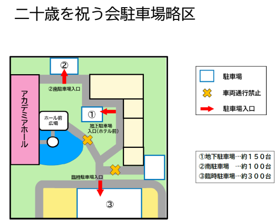

地図
会場：かずさアカデミアホール
（〒292-0818 千葉県木更津市かずさ鎌足2丁目3-9）
アクセス方法
車・タクシーをご利用の場合
- 都心から東京湾アクアライン経由 約50分
- 羽田空港から東京湾アクアライン経由 約40分
- JR木更津駅からタクシーまたは車で約25分
- 館山自動車道「木更津北IC」出口右折、かずさアカデミアパーク方面へ約15分
路線バスをご利用の場合
JR木更津駅（東口・西口）より約25分
-
東口：高倉アカデミア線
時刻表（PDF）を見る -
西口：鴨川線
時刻表（PDF）を見る
駐車場について
地下駐車場に駐車してください。
満車の場合は、①南駐車場 → ②臨時駐車場 の順に駐車をお願いします。

※画像をタップすると拡大します